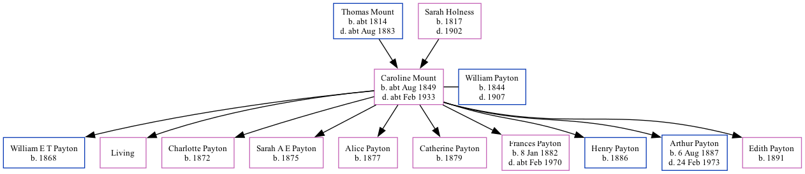

Caroline Payton (née Mount) cAug 1849 - c1933 [ Home ] | [ Calendar ] | [ Surnames Index ] | [ Family History ]The child of Thomas Mount (a laborer) and Sarah Holness (a charwoman)Caroline Mount , the first cousin four-times-removed on the mother's side of Nigel Horne , was born in Herne Bay, Kent, England c. Aug 18491,2 andhad 10 children with William Payton (a brickmaker): William E T , Ada , Charlotte H , Sarah A E , Alice M , Catherine J , Frances Louisa , Henry G , Arthur Albert and Edith D , along with 1 surviving child.
Caroline spent all of her life in Kent, England. Throughout her life, she lived in several places around the county: at Mortimer Street in Herne Bay on Mar 30, 18516 ; at King Street in Herne Bay on Apr 7, 18615 ; in Herne, Kent, England on Apr 3, 18813 ; and in Hampton, Kent, England on Apr 5, 18914 .
She died c. Feb 1933 in Herne Bay2 .
Parents Thomas was born c. 1814Sarah Harvey was born in 1817Children William E T was born in 1868Charlotte H was born in 1872Sarah A E was born in 1875Alice M was born in 1877Catherine J was born in 1879Frances Louisa was born on Jan 8, 1882Henry G was born in 1886Arthur Albert was born on Aug 6, 1887Edith D was born in 1891Citations England & Wales births 1837-2006 - Findmypast England & Wales deaths 1837-2007 - Findmypast 1881 England, Wales & Scotland Census - Findmypast (was age 34 and the wife of the head of the household) 1891 England, Wales & Scotland Census - Findmypast (was age 42 and the wife of the head of the household) 1861 England, Wales & Scotland Census - Findmypast (was age 11 and the daughter of the head of the household) 1851 England, Wales & Scotland Census - Findmypast (was age 2 and the daughter of the head of the household) Media England & Wales births 1837-2006 Transcription - BMD-B-1849-3-IR-000587-008 England & Wales deaths 1837-2007 - BMD/D/1933/1/AZ/000957/142 1881 England, Wales & Scotland Census - GBC/1881/0004743268 1891 England, Wales & Scotland Census - GBC/1891/0005762409 Family Tree Map
Generated by ged2site . Last updated on Feb 28, 2025